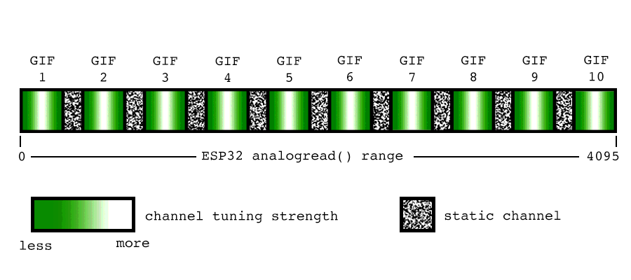

There was a time not so long ago when, if I stumbled across an analog TV somewhere, like at a thrift store, I could checked to see if it worked by turning the dial to channel 6. Analog TV came to an end here in the US in 2009, but for many years later (until July 13, 2021), I could reliably turn to channel 6—an analog station—and get a signal. So, what gives?
I was lucky enough (depending on how you define "lucky") to live near a so-called Franken-station. These TV stations primarily operated as FM radio stations but also broadcast a video signal, usually a static image, to comply with their FCC licenses. While the rest of the analog TV stations in the United States transitioned to digital broadcast in 2009, these Franken-stations were allowed to stay on the air until 2021.
There was nothing in particular of interest to me on my local Franken-station, Guadalupe Radio, which broadcast Spanish-language Catholic content, but it was useful because it was the only thing left that analog TVs could pick up. But beyond that, it was comforting in a way to know that there was still an old-fashioned TV station on the air near me. I could tune to channel 6 any time of day or night and get a signal. It was a picture of the Virgin of Guadalupe, but it was there, and I could rely on that.
Now I have nothing! Never again will I be able to turn the dial on a TV and see stations come in and out of tune as I move up or down the band.
But what if we could recreate that experience somehow? That's the idea behind GIF-TV.
If you've read my post about Your Pet Eyea>, you'll remember that I've been interested in the idea of using microcontrollers to generate composite video signals. For that project, I used a library called TVout, which generates simple black-and-white images from an Arduino and a couple of resistors.
TVout is cool and all, but sometimes you want to work in a space where more than just black and white are available. Somewhere along the line while working with TVout and my friend Roger, who you may remember from the Pet Eye project, Roger decided we needed something better. He found an ESP32 library meant for emulating 8-bit video games, took the portion of the library that generates color video, and mashed it together with the Adafruit GFX Graphics Library. The result is an 8-bit color composite library that can generate a video signal with graphics in 256 colors.
I was playing with the library one day, attempting to draw a bitmap on the screen of my portable color TV, but the image was appearing scrambled. After a lot of confusion, I realized I had set the dimensions of the bitmap incorrectly in code. All of the pixels were there, but they were in the wrong place.
A walk through stride What I had inadvertently discovered was something called image stride. In some image formats, the data is stored as one long string with breaks where the data is supposed to move down to the next line. It's not unlike how this sentence starts over at the beginning of the next line down once it reaches the right margin.
In a paragraph of text, where the words wrap to the next line doesn't really matter because you only read one line at a time, but in an image, the alignment of the horizontal lines in relationship to each other does matter. If an image is supposed to be 50 pixels wide, and you try to stuff it into a box that's only 48 pixels wide, everything gets misaligned. Let's go through an example. Here's a cute little skull we can use.
Let's move it over to the left a little so we have some room to work.
Now, if we put a 48-pixel-wide boundary box around it, we can see that on each line, two pixels are sticking out of the box. Those pixels have to go somewhere, so they wrap down to the next line. This pushes all the pixels on that next line over by two positions. Since that line was already two pixels too wide for the box, it will have four pixels hanging over. Those four pixels will then wrap to the next line, and the next, all the way to the end of the image's data.
The result is that the entire image becomes skewed, but since the pixels have to stay within the width of the image dimensions, we have to rearrange things so everything fits.
And this is the result:

When I saw the bitmap I was trying to display come out looking like this, my first thought was "What the hell did I do wrong this time?" My second thought was, "Hey, that looks kind of like a TV station that's not tuned in quite right."
Once I realized what had happened, I wondered what it would look like if I varied how much of an error there was in the image stride. I wrote some code that increased and decreased that error automatically, but then someone on Twitter suggested maybe I could link the image stride to the position of a potentiometer, so I could "tune in" an image on the TV screen. I did that, and it was pretty cool! But I wanted more.
Roger's 8-bit video library includes the ability to play GIFs, and I thought it might be fun to apply this faux tuning effect to a moving image. However, I couldn't figure out how to actually make that work, since the library displays GIFs in a completely different way from how it displays bitmaps. As a workaround, I created my own "GIFs" by turning gifs into a series of bitmaps, and writing code to display each one for a fraction of a second. Then I went ahead and modified the code so that there were multiple animations that could be tuned in at different positions of the potentiometer. That looked pretty good, too, so I decided to go even further with it. Quaint problems
In the old days of analog TV, there were two picture adjustments you won't see anymore: horizontal hold and vertical hold. Horizontal hold kept the picture correctly aligned from left to right. When it was incorrectly adjusted, you got a kind of distortion that looks pretty similar to what I found when I set my image stride incorrectly.
Vertical hold, on the other hand, keeps the picture aligned on the screen from top to bottom. When it's poorly adjusted, the image isn't distorted. Instead it drifts either up or down, "rolling" past the screen.
Adding this to my code was relatively simple, since the function for drawing bitmaps lets you specify a position on the screen with X,Y coordinates. To give the picture vertical roll, I just needed some code that incremented the Y coordinate so the picture moved up and off the screen, then reappeared at the bottom of the screen. Within that code, I added some logic that made the speed of the roll decrease the more in "tune" the picture was, with the roll being zero when the picture was fully tuned.
I was pretty happy with what I had achieved by this point and I was sharing it on my Twitter account. Meanwhile, Roger was looking at what I had done and decided to see if he could implement the same thing, but using the GIF-drawing function of his library. The result was something similar to what I had created, but more sophisticated. Not only was it capable of tuning in a GIF, it did it without needing the GIF to be broken down into individual bitmaps by hand. Its vertical roll was also smoother and more natural looking than what I had come up with. I decided to abandon my own code and use his.
Roger's code was written with just a single GIF in mind, but I wanted to simulate multiple channels, each with its own GIF. I needed some clues from Roger about how to make that work, but once I managed to write some code that added a second channel, everything started falling into place. At that point, my only limit was how many GIFs would fit into the memory of an ESP32. I ended up using 10 GIFs and mapping each to a position of a potentiometer attached to an analog input pin of the ESP32. Now when you turn the potentiometer, you would tune through 10 channels. Between each of those channels, I added a smaller channel that just showed static, mimicking the way an analog TV would display static when it was not tuned to any channel in particular.
Whenever I'm at the thrift store and I see a little portable TV for a decent price, I grab it. They are getting harder to find, and they're getting more expensive, but occasionally I can still find one for about $7. They can be useful if you are running a pirate TV station out of your closet (not that I would do that) and they can be hacked most of the time to take composite input most of the time. Once you make that modification, you can connect them to a Raspberry Pi, to a VCR, or to an ESP32.
For this project, I used a Goldbear brand TV that I found while thrifting because I had hacked it for composite input, it had a look that I enjoyed, and it had a large battery compartment where I could hide the ESP32 and a buck converter that would turn the 12V from the TV's power supply into 5V for the ESP32.
To simulate the experience of tuning the TV, I disconnected the TV's channel tuning potentiometer from the rest of its PCB (after being modified to receive composite input, the TV couldn't be tuned anyway). I wired that potentiometer to same analog input pin of the ESP32 that had previously been connected to a standalone potentiometer. Once I stuffed the ESP32 inside the TV's battery compartment and wired its composite video output pin to the TV's input, you could turn the TV's actual dial and tune through the GIFs almost like they were real channels. Fun!
I really enjoyed working on this project. It offered a nice mix of hardware and software hacking, and it gave me a chance to use Roger's ESP32 video library. The only thing I wish I could have done differently was to use a color TV. Roger's library offers vibrant colors, but you can't see any of them on the black-and-white TV I used. Maybe one day I'll find a good opportunity to make use of all those 256 colors.